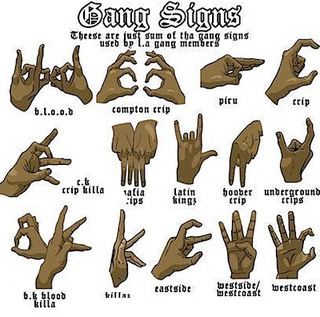

Gang membership is a strong predictor of individual violence in adolescence and generally has been observed to be an even more powerful predictor than two of the most highly regarded factors (i.e., delinquent peer association and prior violence). Survey research has consistently demonstrated that individuals are significantly more criminally active during periods of active gang membership—compared with before joining the gang and after leaving the gang—particularly in serious and violent offenses. Further, prolonged periods of gang involvement and/or greater embeddedness in the gang is associated with higher levels of criminal involvement.
Some youth believe that joining a gang will protect them from neighborhood crime and violence. However, research shows that gang-involved youth are actually more likely to be victims of violence and more likely to commit crimes, leading to higher rates of arrest and incarceration.
Gangs are associations of three or more individuals who adopt a group identity in order to create an atmosphere of fear or intimidation. Gangs are typically organized upon racial, ethnic, or political lines and employ common names, slogans, aliases, symbols, tattoos, style of clothing, hairstyles, hand signs or graffiti. The association's primary purpose is to engage in criminal activity and the use of violence or intimidation to further its criminal objectives and enhance or preserve the association's power, reputation, or economic resources. Gangs are also organized to provide common defense of its members and interests from rival criminal organizations or to exercise control over a particular location or region. Gangs develop and maintain perpetuating characteristics including manifestos, constitutions, and codes of conduct which provide an identifiable structure and rules for initiation and advancement within the association. Through their use of open intimidation and identifiable insignia, gangs may be distinguished from other organizational criminal groups such as La Cosa Nostra and transnational criminal organizations who rely on secrecy and clandestine control of legitimate businesses and governments to advance their criminal aims.
Gangs typically engage in criminal activity and use violence or intimidation to enhance or preserve their power, reputation, or economic resources. The nature of violence can vary largely, including homicide, knife and gun related offences, assault, and exploitive crimes. Young people involved with gangs might be victims of violence or pressured into doing things. They might be abused, exploited and put into dangerous situations.
There is no single, generally accepted definition of a “gang.” State and local jurisdictions tend to develop their own definitions. The term “street gang” is often used interchangeably with “youth gang” as well as “criminal street gang,” with the latter explicitly denoting the element of criminal activity found almost universally in gang-related legislation. However, the term “street gang” carries two specific meanings that increase its practical value. First, it suggests a common feature of gangs: They commonly have a street presence. Street socialization is a key feature of adolescent gangs. Second, this term also refers to “street crimes,” that is, serious and violent crimes (e.g., assaults, drive-by shootings, robberies, homicides) that occur on the streets and that often are of concern to citizens and policymakers. The ongoing commission of these offenses consequently instills fear among residents, undermining informal social control mechanisms within the community.
Responses from law enforcement agencies in the National Youth Gang Survey (NYGS) indicate that among the characteristics of greatest importance in defining a gang are group identity and criminal activity, a group name, and accompanying signs and symbols that outwardly represent the group to others.
When joining a gang, often times there is an initiation that needs to be passed. This initiation is usually a violent crime that could include theft, murder, gang-rape, or drive-by shootings.
ALL TEAM MEMBERS